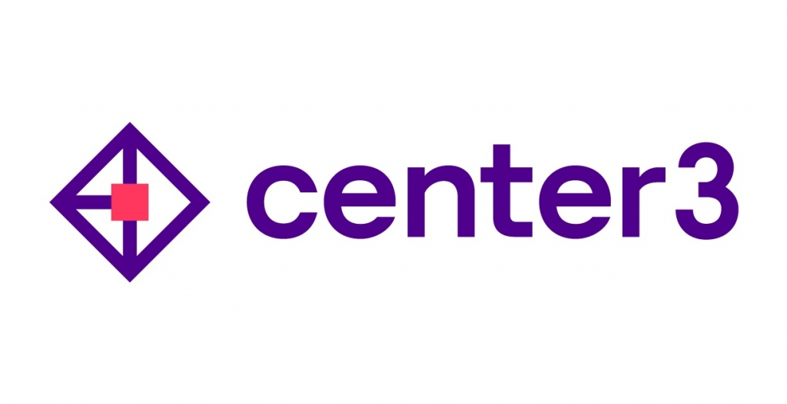
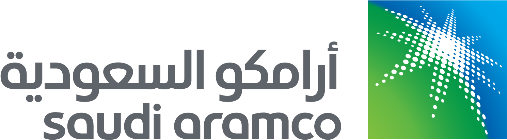

AI Technical Lead & AI Architect
Designing production-grade Generative AI systems, Multi-Agent platforms, and enterprise-scale ML solutions. Expert in RAG, LLM orchestration, and microservices-based AI architectures for mission-critical applications.
AI Technical Lead & Architect with 9+ years of robust experience in Generative AI, Multi-Agent Systems, MLOps, and enterprise-scale AI architecture.
Proven track record delivering production-grade solutions in logistics automation, fraud detection, predictive analytics, and advanced NLP/RAG systems. Expert in designing microservices-based AI platforms with secure deployment pipelines for mission-critical business applications.
Multi-Agent GenAI Platform for Saudi Aramco and SPB.
stc AI-Core agentic operations, center3 data-center assets, and network traffic load prediction at MDS.
Brain tumor segmentation and ECG arrhythmia classification.
center3 asset reconciliation, Tahakom traffic enforcement, SPB checkpoint gates, and stc infrastructure operations.
Delivery delay prediction, waybill anomaly detection, the logistics chatbot, and document OCR.
Document intelligence, forecasting, and anomaly detection approaches that carry over to regulated pharma workflows.
Pre-master Class
Fayoum University, 2022Graduation Projects
Fayoum University, 2019IEEE-ICPC Programming
Competition, 20189+ years of building AI systems — 6 roles across 4 organizations plus freelance work
Focus: Large Language Models (LLM)
Focus: Generative AI
A showcase of production AI systems and research projects
Deployed systems with real users and measured business impact.

An offline, CPU-only, explainable AI system built for center3, a major Saudi data-center operator. It extracts equipment tags from engineering drawings (P&IDs, as-built PDFs, DWG/DXF, scans) and reconciles them against an Odoo-based operations register in three phases: deterministic matching, probabilistic graph inference, and self-learning ML. It ships as a single desktop executable with no GPU, no cloud, and no data leaving the site, and contributed to $50M+ in cost savings for the client.
Problem: Asset records are scattered across thousands of engineering drawings, and extracting tags by hand is slow and error-prone.
Solution: Dual-stream extraction. PaddleOCR (PP-OCRv5 + OpenVINO) captures text-labeled tags, while OpenCV template and symbol matching recovers ~30 symbol-only assets that no OCR engine can read. A 20-model CPU benchmark harness chose the production engine based on tag recall, symbol-only recall, and CPU feasibility, reaching 92% tag recall at ~3 seconds per page without a GPU.
Problem: The drawings and the system of record disagree. Auditors need defensible answers about what matches, what's missing, and why.
Solution: A rule-based closed loop. Tiered composite-key matching runs over Tag, ID, Serial, Model, Manufacturer, and Zone, and a numeric-signature veto prevents false matches between sibling tags (e.g. AHU-12 vs AHU-13). A tag family/pattern engine and 20 codified business rules (BR1–BR8, R1–R12) sort every record four ways (Matched, Review, Discovered, or Unmatched) and report results in five buckets: Matched, Mismatching, Missing, Novel, and Anomalies. An SME approval gate writes verified corrections back to the register. No LLMs are involved, and every match is explainable.
Problem: Rules alone can't settle partial tags, conflicting serials, and duplicate records.
Solution: Each candidate becomes a node and each piece of evidence a weighted edge. Fellegi-Sunter scoring, CRF / loopy belief propagation, and connected-component clustering let confident matches inform uncertain neighbours, and results come out as calibrated P(real) scores. A lightweight SQLite edge table keeps it CPU-friendly and offline.
Problem: Asset registers decay as new naming conventions, missing sequence numbers, and outliers keep appearing.
Solution: Four classical ML models, no deep learning. Gradient-boosted trees score matches, an Isolation Forest flags anomalies, a sequence/gap model predicts missing assets (e.g. gaps in AHU numbering), and character n-gram drift detection catches changing tag conventions. It all runs in an active-learning MLOps loop: SME decisions become training data, training and serving are kept separate, and an evaluation gate must pass before any model is promoted.
An enterprise-grade agentic AI platform built on Cohere Command, Embed, and Rerank that automates ticket handling, infrastructure operations, and network incident response across STC's operations. Deployed in-Kingdom in line with PDPL and NCA requirements, it cut mean time to resolution by 45%, auto-resolved 35% of L1 tickets, and delivered multi-million-riyal annual operational savings.
A multi-agent workflow that classifies, prioritizes, de-duplicates, and routes incoming Arabic and English tickets, using Cohere Command for reasoning and Cohere Embed for semantic similarity. It automated triage for 70% of tickets and cut first-response time from 4 hours to under 10 minutes.
A retrieval-augmented agent grounded in runbooks, SOPs, past incident reports, and vendor documentation, using Cohere Embed for retrieval and Cohere Rerank for precision. Every answer cites its sources, and it saves engineers ~2 hours a day in lookup time.
Tool-calling agents query monitoring systems, logs, alarm feeds, and network topology, then correlate events to find the root cause and recommend fixes. Related alarms are merged into single incidents.
An orchestration layer in which agents draft change requests, run approved remediation playbooks, and close tickets automatically. Guardrails include role-based permissions, approval gates for high-risk actions, and a full audit trail. It recorded zero unauthorized changes.
An end-to-end AI traffic-enforcement platform that runs on live camera streams. It detects and tracks vehicles, flags violations, reads number plates, identifies drivers, and packages each violation into an auditable case record.
Detects and tracks vehicles across multiple concurrent camera streams in real time and flags several violation types, so operators review flagged events instead of watching every feed.
Plate localization followed by OCR, with multi-frame voting that combines reads across consecutive frames for higher accuracy than single-frame OCR, in both day and night conditions.
Verifies drivers on field footage using ArcFace embeddings (99.8% on the LFW benchmark), with fast identity search over a large face gallery through vector search.
Automatically builds a complete, auditable case record for each violation. Confidence-based routing sends clear cases straight through and only uncertain ones to manual review.
Manual screening took 8+ hours a day per recruiter, with inconsistent criteria. This platform replaces first-round interviews end to end. A multi-service async backend (FastAPI, PostgreSQL, Redis, MongoDB, MinIO) runs a LangGraph conversation engine. The real-time audio pipeline is Faster Whisper STT → LLM transcript correction → AI response → Coqui XTTS v2 with avatar lip-sync. Scoring combines GPT-4o + Ollama, MediaPipe/InsightFace behavioral analysis, and LibROSA tonality, with a React/TypeScript admin UI, scheduling, Odoo ERP integration, and PDF reports.
Checkpoint gates relied on manual driver checks, creating bottlenecks and no traceability. This end-to-end platform verifies the driver’s face (InsightFace SCRFD + ArcFace), reads Arabic/English licenses with PaddleOCR, and cross-checks license photo against face via 512-d embeddings. 6 face detectors were benchmarked on 3,226 WIDER Face images and 4 OCR engines compared. The privacy-first design stores only non-reversible embeddings, served by an async FastAPI pipeline with Docker deployment.

Logistics operations across 5+ departments used siloed tools with no shared AI capability. This centralized platform integrates 4 AI modules behind a microservices “Sidecar Gateway” (Nginx, FastAPI, Streamlit, Docker), with Chain-of-Thought prompting for complex logistics queries and centralized AI governance.
Rule-based checks missed complex fraud patterns in supply-chain waybills. This real-time ensemble combines Isolation Forests with statistical heuristics, with a React/Vite frontend and Plotly dashboards for investigation and alerting.
Unpredictable delivery delays caused 20%+ scheduling inefficiency. XGBoost/LightGBM models with 30+ engineered features forecast delays, and a Streamlit dashboard turns them into scheduling recommendations.
Manual document processing took 40+ staff-hours a week. A multi-stage PaddleOCR pipeline with GPT-4 post-processing and a Human-in-the-Loop validation step automates digitization while keeping people in control of quality.
Support, fraud analysis, and recommendations ran as 3 disconnected systems. WeBook Brain unifies them: a Gemini 2 dual-agent chatbot (data API + conversational agent), a fraud detection RAG engine, and a recommendation system in one platform.
Fraud analysts manually reviewed thousands of transactions a week and missed 30%+ of complex cases. This RAG-powered backend (FastAPI, Ollama 3, Mistral, ChromaDB, MongoDB, Docker) adds semantic search across historical transactions to surface fraud patterns.
Logistics teams spent 15+ hours a week querying internal knowledge bases for operational data and shipment status. This agentic RAG chatbot (GPT-4, LangChain, ChromaDB/Pinecone) retrieves answers and picks its own tools to resolve queries.
Customer attrition was only noticed after cancellation, with 15%+ annual churn. A gradient boosting and logistic regression ensemble over 50+ behavioral, transactional, and engagement features flags at-risk customers early enough for targeted retention.
Restaurant management platform and mobile app for streamlined order and inventory control.
Prototypes, applied research, and published work exploring new techniques.
Published research using ResNet, VGG, LSTM, and Glove to generate natural captions for video content.
Local-first, CPU-only RAG chatbot API answering questions in Arabic and English, using FAISS retrieval and Hugging Face Transformers for embeddings and generation, served with FastAPI.
Lightweight RAG application using Mistral LLM and txtai for semantic search.
High-throughput, low-latency system for real-time transaction analysis to prevent financial loss.
YOLOX-based X-ray system for hyper-resolution brain tumor segmentation and classification.
Deep learning model for automated classification of ECG signals to identify cardiac arrhythmias.
Arabic text extraction systems using Docker, Flask, and REST API for document digitization.
Core competencies across the full AI/ML stack
Research Square (preprint) — July 2026
Distills step-by-step reasoning from stronger teacher models into smaller Arabic language models using a small, heavily filtered set of Arabic reasoning traces, evaluated on a new Arabic reasoning benchmark.
Frontiers in Operations Research — Elsevier
DOI: 10.1016/j.fraope.2026.100497
Read PaperFayoum University, Egypt
Fayoum University, Egypt
Let's build something amazing together
Riyadh, Saudi Arabia